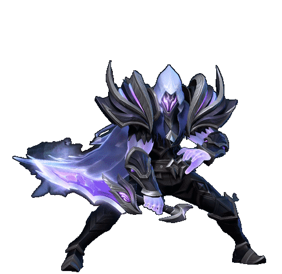

<title>Clean GIF Preview</title>
<meta name="claude:viewport-fit-sides" content="cover">
<style>
  /* Layout: one centered stage with the animation, format and background switchers below */
  :root {
    --bg: #eeedf3; --fg: #1d1b26; --muted: #615e70; --line: #d3d0dd;
    --accent: #6b4fd8; --chk-a: #ffffff; --chk-b: #d9d7e2;
    --font: "IBM Plex Sans", system-ui, sans-serif;
    --mono: "IBM Plex Mono", ui-monospace, monospace;
  }
  @media (prefers-color-scheme: dark) { :root:not([data-theme="light"]) {
    --bg: #15141c; --fg: #ecebf2; --muted: #a09db0; --line: #2e2c3a;
    --accent: #a993ff; --chk-a: #2a2836; --chk-b: #1f1d29; color-scheme: dark } }
  :root[data-theme="dark"] {
    --bg: #15141c; --fg: #ecebf2; --muted: #a09db0; --line: #2e2c3a;
    --accent: #a993ff; --chk-a: #2a2836; --chk-b: #1f1d29; color-scheme: dark }
  body { background: var(--bg); color: var(--fg); font-family: var(--font);
    padding-left: max(16px, env(safe-area-inset-left, 0px));
    padding-right: max(16px, env(safe-area-inset-right, 0px)); padding-block: 32px; }
  main { max-width: 580px; margin: 0 auto; display: grid; gap: 16px; }
  h1 { font-size: 1.25rem; margin: 0; text-wrap: balance; }
  p { margin: 0; color: var(--muted); line-height: 1.5; }
  .stage { border: 1px solid var(--line); border-radius: 10px; padding: 24px;
    display: grid; place-items: center; }
  .stage img, .stage video { display: block; width: 480px; max-width: 100%; height: auto; }
  .stage.chk { background: repeating-conic-gradient(var(--chk-a) 0 25%, var(--chk-b) 0 50%) 0 0 / 20px 20px; }
  .stage.side { background: #0e0e10; }
  .stage.panel { background: #18181b; }
  .stage.light { background: #fafafa; }
  .label { font-size: 12px; letter-spacing: 0.06em; text-transform: uppercase; color: var(--muted); }
  .group { display: grid; gap: 6px; }
  .bar { display: flex; flex-wrap: wrap; gap: 8px; }
  .bar button { font: inherit; padding: 6px 14px; border-radius: 999px; cursor: pointer;
    border: 1px solid var(--line); background: transparent; color: var(--fg); }
  .bar button[aria-pressed="true"] { border-color: var(--accent); color: var(--accent); }
  .bar button:focus-visible { outline: 2px solid var(--accent); outline-offset: 2px; }
  .note { font-size: 14px; }
  .meta { font-family: var(--mono); font-size: 12px; color: var(--muted); }
</style>
<main>
  <h1>Clean GIF uten bakgrunn</h1>
  <div class="stage side" id="stage">
    
    <video id="vid" src="clean-obs.webm" autoplay loop muted playsinline hidden></video>
  </div>
  <p class="note" id="note"></p>
  <div class="group">
    <span class="label">Fil</span>
    <div class="bar" role="group" aria-label="Fil">
      <button id="f-side" data-fmt="clean-twitch-side.gif" data-bgdefault="side" aria-pressed="true">GIF · Twitch kanalside</button>
      <button id="f-panel" data-fmt="clean-twitch-panel.gif" data-bgdefault="panel" aria-pressed="false">GIF · Twitch panel</button>
      <button id="f-obs" data-fmt="clean-obs.webm" data-bgdefault="chk" aria-pressed="false">WebM · OBS overlay</button>
      <button id="f-webp" data-fmt="clean.webp" data-bgdefault="chk" aria-pressed="false">WebP</button>
      <button id="f-gif" data-fmt="clean.gif" data-bgdefault="chk" aria-pressed="false">GIF · harde kanter</button>
    </div>
  </div>
  <div class="group">
    <span class="label">Bakgrunn</span>
    <div class="bar" role="group" aria-label="Bakgrunn">
      <button id="bg-side" data-bg="side" aria-pressed="true">Twitch kanalside #0e0e10</button>
      <button id="bg-panel" data-bg="panel" aria-pressed="false">Twitch panel #18181b</button>
      <button id="bg-chk" data-bg="chk" aria-pressed="false">Rutenett</button>
      <button id="bg-light" data-bg="light" aria-pressed="false">Lys</button>
    </div>
  </div>
  <div class="meta">72 rammer · 70 ms per ramme · ca. 5 s per runde</div>
</main>
<script>
  const notes = {
    'clean-twitch-side.gif': 'Myke kanter blandet inn i Twitch sin mørke sidebakgrunn. Bruk den der bakgrunnen er #0e0e10.',
    'clean-twitch-panel.gif': 'Myke kanter blandet inn i fargen på panelene under streamen (#18181b).',
    'clean-obs.webm': 'Ekte gjennomsiktighet. Legg den inn som Media Source i OBS med «Loop» slått på, så ligger den rent over spillet.',
    'clean.webp': 'Ekte gjennomsiktighet, for steder som støtter animert WebP.',
    'clean.gif': 'Vanlig GIF uten fast bakgrunn. Fungerer overalt, men kappe og glød får harde kanter.'
  };
  const stage = document.getElementById('stage'), anim = document.getElementById('anim'),
        vid = document.getElementById('vid'), note = document.getElementById('note');
  const press = (sel, b) => document.querySelectorAll(sel).forEach(x => x.setAttribute('aria-pressed', x === b));
  const setBg = bg => { stage.className = 'stage ' + bg; press('[data-bg]', document.querySelector(`[data-bg="${bg}"]`)); };
  document.querySelectorAll('[data-bg]').forEach(b => b.addEventListener('click', () => setBg(b.dataset.bg)));
  document.querySelectorAll('[data-fmt]').forEach(b => b.addEventListener('click', () => {
    const f = b.dataset.fmt, isVid = f.endsWith('.webm');
    vid.hidden = !isVid; anim.hidden = isVid;
    if (isVid) vid.play().catch(() => {}); else { vid.pause(); anim.src = f; }
    note.textContent = notes[f]; press('[data-fmt]', b); setBg(b.dataset.bgdefault);
  }));
  note.textContent = notes['clean-twitch-side.gif'];
</script>
